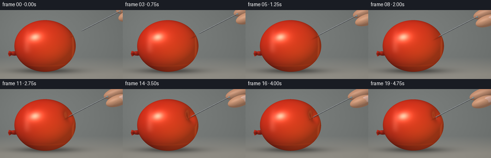
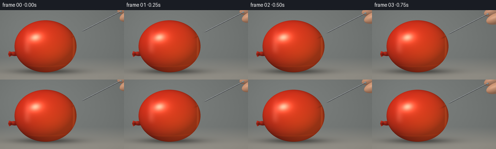

CODING AGENTS AS PIXEL WORLD MODELS
traex/GPT-6.1-Sol · phygen_024
点击播放 · 原生 RGB 像素
逐轮保存的候选
回放视频、检查图与代码变化。
每份候选均可单独播放。实际图片检查记录在下方工具轨迹中。
候选 01播放与检查图
点击播放 · 原生 RGB 像素


展开代码变化
--- 上一保存版本
+++ 本次保存版本
@@ -0,0 +1,265 @@
+"""Procedural macro photograph animation, using only numpy and Pillow."""
+from pathlib import Path
+import json
+import numpy as np
+from PIL import Image
+import artifact_io
+
+ROOT = Path(__file__).resolve().parent
+SPEC = json.loads((ROOT/'task_spec.json').read_text())
+W,H=SPEC['width'],SPEC['height']
+SS=4
+X,Y=np.meshgrid((np.arange(W*SS)+.5)/SS,(np.arange(H*SS)+.5)/SS)
+SH=X.shape
+rng=np.random.default_rng(42)
+noise=rng.normal(0,.50,SH).astype(np.float32)
+C=np.array([94.,75.,0.])
+RAD=np.array([64.,54.,47.])
+contact=np.array([146.,56.,0.])
+contact[2]=RAD[2]*np.sqrt(1-((contact[0]-C[0])/RAD[0])**2-((contact[1]-C[1])/RAD[1])**2)
+n=(contact-C)/RAD**2
+n=n/np.linalg.norm(n)
+LIGHT=np.array([-.46,-.57,.68]); LIGHT/=np.linalg.norm(LIGHT)
+L2=np.array([.8,.2,.55]);L2/=np.linalg.norm(L2)
+VIEW=np.array([0.,0.,1.])
+HALF=(LIGHT+VIEW);HALF/=np.linalg.norm(HALF)
+
+def blend(im,col,alpha):
+ alpha=np.clip(alpha,0,1)[...,None]
+ return im*(1-alpha)+np.asarray(col)*alpha
+
+def background():
+ # A smooth, completely defocused studio background and matte tabletop.
+ vignette=((X-118)/210)**2+((Y-65)/155)**2
+ a=np.clip((Y-98)/36,0,1)
+ im=np.empty((*SH,3),dtype=np.float64)
+ for k,(top,bot) in enumerate([(116,149),(120,146),(118,138)]):
+ im[...,k]=top+(bot-top)*a-17*vignette+noise*.6
+ illumination=7*np.exp(-((X-55)/116)**2-((Y-37)/82)**2)
+ im+=illumination[...,None]
+ shadow=np.exp(-((X-97)/60)**2-((Y-127)/5.2)**2)*.37
+ shadow+=.12*np.exp(-((X-98)/73)**2-((Y-127)/10)**2)
+ im*=1-shadow[...,None]
+ return im
+BASE=background()
+
+def ellipse_surface(im,zbuf,c,r,color,rotation=0.,skin=False):
+ ca,sa=np.cos(rotation),np.sin(rotation)
+ xx=ca*(X-c[0])+sa*(Y-c[1]); yy=-sa*(X-c[0])+ca*(Y-c[1])
+ v=1-(xx/r[0])**2-(yy/r[1])**2
+ valid=v>0
+ z=c[2]+r[2]*np.sqrt(np.maximum(v,0))
+ nx=xx/r[0]**2; ny=yy/r[1]**2; nz=(z-c[2])/r[2]**2
+ norm=np.sqrt(nx*nx+ny*ny+nz*nz)+1e-8
+ nx,ny,nz=(ca*nx-sa*ny)/norm,(sa*nx+ca*ny)/norm,nz/norm
+ nd=np.maximum(nx*LIGHT[0]+ny*LIGHT[1]+nz*LIGHT[2],0)
+ sp=np.maximum(nx*HALF[0]+ny*HALF[1]+nz*HALF[2],0)**30
+ col=np.asarray(color)[None,None,:]*(.65+.36*nd[...,None])+18*sp[...,None]
+ if skin:
+ # Very faint pores and curved fingertip creases, without outlined anatomy.
+ texture=(np.sin(xx*2.4+np.sin(yy*.9))*np.sin(yy*2.8))*.8
+ crease=np.exp(-((yy-3.0-.026*xx**2)/.26)**2)*np.exp(-(xx/13)**6)
+ crease+=.65*np.exp(-((yy-5.8-.022*xx**2)/.25)**2)*np.exp(-(xx/12)**6)
+ col+=texture[...,None]-crease[...,None]*np.array([9.,11.,12.])
+ col+=np.maximum(1-nz,0)[...,None]*np.array([4.,-2.,-3.])
+ mask=valid&(z>zbuf)
+ im[mask]=col[mask]; zbuf[mask]=z[mask]
+ return im,zbuf
+
+def latex_neck(im):
+ # Tied-off neck lying to the left of the swollen body, thick folded rubber.
+ im,_=ellipse_surface(im,np.full(SH,-1000.),(36.0,89.6,-7),(14,5.0,4),(148,31,23),-.19)
+ im,_=ellipse_surface(im,np.full(SH,-1000.),(27.4,90.,-2),(5.1,4.,3),(176,42,27),-.17)
+ # A flared folded tail, drawn at supersampling resolution.
+ mask=Image.new('L',(W*SS,H*SS)); from PIL import ImageDraw
+ d=ImageDraw.Draw(mask)
+ pts=[(27,87.5),(18.5,85),(16.8,91),(19,97),(27.8,92.1)]
+ d.polygon([(int(x*SS),int(y*SS)) for x,y in pts],fill=255)
+ a=np.asarray(mask)/255.
+ shade=.78+.16*np.cos((Y-87)*.55)+.1*np.sin((X-16)*.7)
+ col=shade[...,None]*np.array([192.,47.,30.])
+ im=blend(im,col,a)
+ fold=np.exp(-((Y-90.5-.26*(X-23))/.38)**2)*np.exp(-((X-22)/5)**4)*a
+ im=blend(im,[98,20,18],fold*.5)
+ return im
+
+
+def balloon(im,depth,shrink):
+ rad=RAD*(1-shrink)
+ dx=X-C[0];dy=Y-C[1]
+ ellipse=1-(dx/rad[0])**2-(dy/rad[1])**2
+ zfront=rad[2]*np.sqrt(np.maximum(ellipse,0))
+ region=(ellipse>0)
+ # An implicit ellipsoid with a local inward normal displacement. The
+ # pin's pressure creates a real valley in both geometry and normals.
+ def F(z):
+ ax=X-contact[0];ay=Y-contact[1];az=z-contact[2]
+ dot=ax*n[0]+ay*n[1]+az*n[2]
+ tang=np.maximum(ax*ax+ay*ay+az*az-dot*dot,0)
+ bump=np.exp(-tang/(2*10.7**2)-(dot/37)**4)
+ return (dx/rad[0])**2+(dy/rad[1])**2+(z/rad[2])**2-1 + depth*.043*bump
+ z=zfront.copy()
+ affected=region&(((X-contact[0])**2+(Y-contact[1])**2)<45**2)
+ # Only the local region requires a numerical surface intersection.
+ hi=zfront.copy();lo=zfront.copy();found=~affected
+ for j in range(1,37):
+ trial=zfront*(1-2*j/36)
+ inside=F(trial)<=0
+ crossing=affected&~found&inside
+ lo[crossing]=trial[crossing]
+ hi[crossing]=(zfront*(1-2*(j-1)/36))[crossing]
+ found|=crossing
+ for _ in range(13):
+ mid=(lo+hi)*.5
+ inside=F(mid)<0
+ lo=np.where(affected&found&inside,mid,lo)
+ hi=np.where(affected&found&~inside,mid,hi)
+ z[affected]=(lo[affected]+hi[affected])*.5
+ visible=region&found
+ # Closed-form derivative of the indentation field.
+ ax=X-contact[0];ay=Y-contact[1];az=z-contact[2]
+ dot=ax*n[0]+ay*n[1]+az*n[2]
+ tang=np.maximum(ax*ax+ay*ay+az*az-dot*dot,0)
+ bump=np.exp(-tang/(2*10.7**2)-(dot/37)**4)
+ normals=[]
+ for a,nn,base,rr in [(ax,n[0],dx,rad[0]),(ay,n[1],dy,rad[1]),(az,n[2],z,rad[2])]:
+ grad=-(a-dot*nn)/10.7**2-4*dot**3*nn/37**4
+ normals.append(2*base/rr**2+depth*.043*bump*grad)
+ length=np.sqrt(sum(q*q for q in normals))+1e-9
+ nx,ny,nz=[q/length for q in normals]
+ diffuse=np.maximum(nx*LIGHT[0]+ny*LIGHT[1]+nz*LIGHT[2],0)
+ fill=np.maximum(nx*L2[0]+ny*L2[1]+nz*L2[2],0)
+ # Rich coral latex, luminous transmitted light and a dark grazing rim.
+ base=.40+.54*diffuse+.18*fill
+ edge=np.maximum(nz,0)**.24
+ col=np.empty((*SH,3))
+ col[...,0]=207*base+25*edge
+ col[...,1]=40*base+15*edge+10*fill
+ col[...,2]=23*base+8*edge
+ thickness=np.clip(zfront/47,0,1)
+ internal=np.exp(-((X-108)/43)**2-((Y-91)/29)**2)
+ col+=internal[...,None]*np.array([16.,8.,1.])
+ # Softbox reflection, stretched and slightly curved by the rubber surface.
+ dotH=np.maximum(nx*HALF[0]+ny*HALF[1]+nz*HALF[2],0)
+ broad=dotH**28
+ sharp=dotH**105
+ col+=broad[...,None]*np.array([52.,35.,29.])+sharp[...,None]*np.array([102.,113.,109.])
+ strip=np.exp(-((nx+.49)/.11)**2-((ny+.23)/.48)**6)*np.maximum(nz,0)**3
+ col+=strip[...,None]*np.array([27.,36.,35.])
+ rim=np.exp(-((nx-.86)/.045)**2)*np.exp(-((Y-68)/48)**2)
+ col+=rim[...,None]*np.array([25.,18.,9.])
+ # A soft, weak optical caustic at the bottom of the water-filled latex.
+ caustic=np.exp(-((Y-117+4*((X-92)/46)**2)/1.4)**2)*np.exp(-((X-97)/46)**6)
+ col+=caustic[...,None]*np.array([11.,5.,1.])
+ micro=noise*.48+.25*np.sin(X*1.8+Y*2.3)
+ col+=micro[...,None]
+ im[visible]=col[visible]
+ zbuf=np.where(visible,z,-1000.)
+ return im,zbuf
+
+
+def pin(im,zbuf,tip,length=112.,radius=.79):
+ dx=X-tip[0];dy=Y-tip[1]
+ q=dx*n[0]+dy*n[1]
+ for iscone in [False,True]:
+ k=radius/7. if iscone else 0.
+ factor=1+k*k
+ A=1-factor*n[2]**2
+ B=-2*factor*n[2]*q
+ CC=dx*dx+dy*dy-factor*q*q-(0 if iscone else radius**2)
+ disc=B*B-4*A*CC
+ zz=(-B+np.sqrt(np.maximum(disc,0)))/(2*A)
+ along=q+zz*n[2]
+ valid=(disc>0)&(along>=0 if iscone else along>=7)&(along<=7 if iscone else along<=length)
+ z=tip[2]+zz
+ vx=dx-factor*along*n[0];vy=dy-factor*along*n[1];vz=zz-factor*along*n[2]
+ norm=np.sqrt(vx*vx+vy*vy+vz*vz)+1e-8
+ nx,ny,nz=vx/norm,vy/norm,vz/norm
+ nd=np.maximum(nx*LIGHT[0]+ny*LIGHT[1]+nz*LIGHT[2],0)
+ # Reflections of the broad overhead panel in polished stainless steel.
+ rx,ry,rz=2*nz*nx,2*nz*ny,2*nz*nz-1
+ panel=np.exp(-((ry+.42)/.3)**4)*np.exp(-((rx+.2)/.8)**4)
+ shine=np.maximum(nx*HALF[0]+ny*HALF[1]+nz*HALF[2],0)**45
+ metal=47+68*nd+117*panel+59*shine
+ col=np.stack([metal*.97,metal,metal*1.035],axis=-1)
+ mask=valid&(z>zbuf)
+ im[mask]=col[mask];zbuf[mask]=z[mask]
+ head=tip+n*length
+ im,zbuf=ellipse_surface(im,zbuf,head,(2.05,2.05,2.05),(135,153,158))
+ return im,zbuf,head
+
+
+def water_drop(im,zbuf,c,r):
+ dx=(X-c[0])/r[0];dy=(Y-c[1])/r[1]
+ rr=dx*dx+dy*dy
+ valid=rr<1
+ z=c[2]+r[2]*np.sqrt(np.maximum(1-rr,0))
+ mask=valid&(z>zbuf)
+ alpha=np.clip(.15+.37*rr,0,1)*mask
+ target=im*.70+np.array([33.,31.,29.])
+ im=blend(im,target,alpha)
+ highlight=np.exp(-((dx+.34)/.21)**2-((dy+.45)/.18)**2)*mask
+ im=blend(im,[240,244,238],highlight*.90)
+ crescent=np.exp(-((np.sqrt(rr)-.90)/.055)**2)*np.maximum(dx*.6+dy*.8,0)*mask
+ im=blend(im,[210,219,212],crescent*.68)
+ zbuf[mask]=z[mask]
+ return im,zbuf
+
+
+def render(i):
+ # Approach for 1.5 seconds, pressure for 2 seconds, then penetration.
+ if i<=6:
+ a=i/6
+ offset=30*(1-a)
+ depth=0.
+ penetration=0.
+ elif i<=14:
+ a=(i-6)/8
+ depth=8.0*(a*a*(3-2*a))
+ offset=-depth
+ penetration=0.
+ else:
+ a=(i-14)/5
+ depth=8-2.1*a
+ penetration=6.4*a
+ offset=-depth-penetration
+ tip=contact+n*offset
+ im=latex_neck(BASE.copy())
+ im,zbuf=balloon(im,depth,.002*max(i-15,0))
+ # Small contact shadow lies just under the shaft, anchored to the latex.
+ ddx=X-(contact[0]+n[0]*offset*.5)
+ ddy=Y-(contact[1]+n[1]*offset*.5+1.6)
+ along=ddx*n[0]+ddy*n[1]
+ perp=ddx*n[1]-ddy*n[0]
+ shadow=np.exp(-(perp/1.1)**2)*np.exp(-((along-4)/12)**4)*.17
+ shadow*=zbuf>-500
+ im*=1-shadow[...,None]
+ head=tip+n*112
+ # Cropped fingers hold the pin; their translation is rigid with its motion.
+ # Index finger above the pin and the thumb pad underneath, never touching balloon.
+ index=head+np.array([20.,-9.,-9.])
+ thumb=head+np.array([22.,8.,6.])
+ im,zbuf=ellipse_surface(im,zbuf,index,(29.,11.3,12.),(195,144,115),-.33,True)
+ im,zbuf=ellipse_surface(im,zbuf,thumb,(26.,11.7,12.),(204,151,119),-.32,True)
+ # A naturally curved thumbnail, confined to the cropped outer thumb.
+ nail=thumb+np.array([10.,-4.5,9.])
+ im,zbuf=ellipse_surface(im,zbuf,nail,(13.,6.7,2.3),(213,169,152),-.31)
+ im,zbuf,head=pin(im,zbuf,tip)
+ if i>=15:
+ # The shaft now occludes into the outer layer. Tiny moist lip and bead
+ # reveal that the pointed cone has crossed the membrane, without a cut.
+ entry=contact-n*depth
+ # A tiny meniscus hugs the pin at the puncture and begins to creep down.
+ c=entry+np.array([.6,1.35+.28*(i-15),2.1])
+ im,zbuf=water_drop(im,zbuf,c,(1.1+.13*(i-15),1.55+.22*(i-15),1.5))
+ # Gentle optical falloff and consistent fine sensor grain.
+ im=np.clip(im+noise[...,None]*.28,0,255).astype(np.uint8)
+ return np.asarray(Image.fromarray(im).resize((W,H),Image.Resampling.LANCZOS))
+
+if __name__=='__main__':
+ frames=[]
+ for i in range(SPEC['frames']):
+ frames.append(render(i))
+ print(f'Rendered {i+1}/{SPEC["frames"]}',flush=True)
+ artifact_io.save(np.stack(frames).astype(np.uint8),ROOT)
+ print('Saved RGB frames, packed pixels, and playable index.html.',flush=True)
候选 02播放与检查图
点击播放 · 原生 RGB 像素

展开代码变化
--- 上一保存版本
+++ 本次保存版本
@@ -92,12 +92,15 @@
region=(ellipse>0)
# An implicit ellipsoid with a local inward normal displacement. The
# pin's pressure creates a real valley in both geometry and normals.
+ pressed = contact - n*depth
+ press_q = np.sum(((pressed-C)/rad)**2)-1
+ amplitude = max(0., -press_q)/np.exp(-(depth/37)**4)
def F(z):
ax=X-contact[0];ay=Y-contact[1];az=z-contact[2]
dot=ax*n[0]+ay*n[1]+az*n[2]
tang=np.maximum(ax*ax+ay*ay+az*az-dot*dot,0)
bump=np.exp(-tang/(2*10.7**2)-(dot/37)**4)
- return (dx/rad[0])**2+(dy/rad[1])**2+(z/rad[2])**2-1 + depth*.043*bump
+ return (dx/rad[0])**2+(dy/rad[1])**2+(z/rad[2])**2-1 + amplitude*bump
z=zfront.copy()
affected=region&(((X-contact[0])**2+(Y-contact[1])**2)<45**2)
# Only the local region requires a numerical surface intersection.
@@ -124,7 +127,7 @@
normals=[]
for a,nn,base,rr in [(ax,n[0],dx,rad[0]),(ay,n[1],dy,rad[1]),(az,n[2],z,rad[2])]:
grad=-(a-dot*nn)/10.7**2-4*dot**3*nn/37**4
- normals.append(2*base/rr**2+depth*.043*bump*grad)
+ normals.append(2*base/rr**2+amplitude*bump*grad)
length=np.sqrt(sum(q*q for q in normals))+1e-9
nx,ny,nz=[q/length for q in normals]
diffuse=np.maximum(nx*LIGHT[0]+ny*LIGHT[1]+nz*LIGHT[2],0)
可观测工具轨迹
实际执行的命令与返回图片。
命令 1exit 0
/bin/bash -lc 'ls -la && cat prompt.txt && cat GENERATION_RULES.md && cat task_spec.json'
命令 2exit 0
/bin/bash -lc "cat artifact_io.py && python - <<'PY'
import numpy, PIL
print('numpy/PIL ready')
PY"命令 3exit 0
/bin/bash -lc "python - <<'PY'
import generate as g
print('contact',g.contact,'normal',g.n)
for d in [0,8,5.9]:
p=g.contact-g.n*d
print('contact indented',p,'head',p+112*g.n)
PY"命令 4exit 0
/bin/bash -lc "cat > generate.py <<'PY'
\"\"\"Procedural macro photograph animation, using only numpy and Pillow.\"\"\"
from pathlib import Path
import json
import numpy as np
from PIL import Image
import artifact_io
ROOT = Path(__file__).resolve().parent
SPEC = json.loads((ROOT/'task_spec.json').read_text())
W,H=SPEC['width'],SPEC['height']
SS=4
X,Y=np.meshgrid((np.arange(W*SS)+.5)/SS,(np.arange(H*SS)+.5)/SS)
SH=X.shape
rng=np.random.default_rng(42)
noise=rng.normal(0,.50,SH).astype(np.float32)
C=np.array([94.,75.,0.])
RAD=np.array([64.,54.,47.])
contact=np.array([146.,56.,0.])
contact[2]=RAD[2]*np.sqrt(1-((contact[0]-C[0])/RAD[0])**2-((contact[1]-C[1])/RAD[1])**2)
n=(contact-C)/RAD**2
n=n/np.linalg.norm(n)
LIGHT=np.array([-.46,-.57,.68]); LIGHT/=np.linalg.norm(LIGHT)
L2=np.array([.8,.2,.55]);L2/=np.linalg.norm(L2)
VIEW=np.array([0.,0.,1.])
HALF=(LIGHT+VIEW);HALF/=np.linalg.norm(HALF)
def blend(im,col,alpha):
alpha=np.clip(alpha,0,1)[...,None]
return im*(1-alpha)+np.asarray(col)*alpha
def background():
# A smooth, completely defocused studio background and matte tabletop.
vignette=((X-118)/210)**2+((Y-65)/155)**2
a=np.clip((Y-98)/36,0,1)
im=np.empty((*SH,3),dtype=np.float64)
for k,(top,bot) in enumerate([(116,149),(120,146),(118,138)]):
im[...,k]=top+(bot-top)*a-17*vignette+noise*.6
illumination=7*np.exp(-((X-55)/116)**2-((Y-37)/82)**2)
im+=illumination[...,None]
shadow=np.exp(-((X-97)/60)**2-((Y-127)/5.2)**2)*.37
shadow+=.12*np.exp(-((X-98)/73)**2-((Y-127)/10)**2)
im*=1-shadow[...,None]
return im
BASE=background()
def ellipse_surface(im,zbuf,c,r,color,rotation=0.,skin=False):
ca,sa=np.cos(rotation),np.sin(rotation)
xx=ca*(X-c[0])+sa*(Y-c[1]); yy=-sa*(X-c[0])+ca*(Y-c[1])
v=1-(xx/r[0])**2-(yy/r[1])**2
valid=v>0
z=c[2]+r[2]*np.sqrt(np.maximum(v,0))
nx=xx/r[0]**2; ny=yy/r[1]**2; nz=(z-c[2])/r[2]**2
norm=np.sqrt(nx*nx+ny*ny+nz*nz)+1e-8
nx,ny,nz=(ca*nx-sa*ny)/norm,(sa*nx+ca*ny)/norm,nz/norm
nd=np.maximum(nx*LIGHT[0]+ny*LIGHT[1]+nz*LIGHT[2],0)
sp=np.maximum(nx*HALF[0]+ny*HALF[1]+nz*HALF[2],0)**30
col=np.asarray(color)[None,None,:]*(.65+.36*nd[...,None])+18*sp[...,None]
if skin:
# Very faint pores and curved fingertip creases, without outlined anatomy.
texture=(np.sin(xx*2.4+np.sin(yy*.9))*np.sin(yy*2.8))*.8
crease=np.exp(-((yy-3.0-.026*xx**2)/.26)**2)*np.exp(-(xx/13)**6)
crease+=.65*np.exp(-((yy-5.8-.022*xx**2)/.25)**2)*np.exp(-(xx/12)**6)
col+=texture[...,None]-crease[...,None]*np.array([9.,11.,12.])
col+=np.maximum(1-nz,0)[...,None]*np.array([4.,-2.,-3.])
mask=valid&(z>zbuf)
im[mask]=col[mask]; zbuf[mask]=z[mask]
return im,zbuf
def latex_neck(im):
# Tied-off neck lying to the left of the swollen body, thick folded rubber.
im,_=ellipse_surface(im,np.full(SH,-1000.),(36.0,89.6,-7),(14,5.0,4),(148,31,23),-.19)
im,_=ellipse_surface(im,np.full(SH,-1000.),(27.4,90.,-2),(5.1,4.,3),(176,42,27),-.17)
# A flared folded tail, drawn at supersampling resolution.
mask=Image.new('L',(W*SS,H*SS)); from PIL import ImageDraw
d=ImageDraw.Draw(mask)
pts=[(27,87.5),(18.5,85),(16.8,91),(19,97),(27.8,92.1)]
d.polygon([(int(x*SS),int(y*SS)) for x,y in pts],fill=255)
a=np.asarray(mask)/255.
shade=.78+.16*np.cos((Y-87)*.55)+.1*np.sin((X-16)*.7)
col=shade[...,None]*np.array([192.,47.,30.])
im=blend(im,col,a)
fold=np.exp(-((Y-90.5-.26*(X-23))/.38)**2)*np.exp(-((X-22)/5)**4)*a
im=blend(im,[98,20,18],fold*.5)
return im
def balloon(im,depth,shrink):
rad=RAD*(1-shrink)
dx=X-C[0];dy=Y-C[1]
ellipse=1-(dx/rad[0])**2-(dy/rad[1])**2
zfront=rad[2]*np.sqrt(np.maximum(ellipse,0))
region=(ellipse>0)
# An implicit ellipsoid with a local inward normal displacement. The
# pin's pressure creates a real valley in both geometry and normals.
def F(z):
ax=X-contact[0];ay=Y-contact[1];az=z-contact[2]
dot=ax*n[0]+ay*n[1]+az*n[2]
tang=np.maximum(ax*ax+ay*ay+az*az-dot*dot,0)
bump=np.exp(-tang/(2*10.7**2)-(dot/37)**4)
return (dx/rad[0])**2+(dy/rad[1])**2+(z/rad[2])**2-1 + depth*.043*bump
z=zfront.copy()
affected=region&(((X-contact[0])**2+(Y-contact[1])**2)<45**2)
# Only the local region requires a numerical surface intersection.
hi=zfront.copy();lo=zfront.copy();found=~affected
for j in range(1,37):
trial=zfront*(1-2*j/36)
inside=F(trial)<=0
crossing=affected&~found&inside
lo[crossing]=trial[crossing]
hi[crossing]=(zfront*(1-2*(j-1)/36))[crossing]
found|=crossing
for _ in range(13):
mid=(lo+hi)*.5
inside=F(mid)<0
lo=np.where(affected&found&inside,mid,lo)
hi=np.where(affected&found&~inside,mid,hi)
z[affected]=(lo[affected]+hi[affected])*.5
visible=region&found
# Closed-form derivative of the indentation field.
ax=X-contact[0];ay=Y-contact[1];az=z-contact[2]
dot=ax*n[0]+ay*n[1]+az*n[2]
tang=np.maximum(ax*ax+ay*ay+az*az-dot*dot,0)
bump=np.exp(-tang/(2*10.7**2)-(dot/37)**4)
normals=[]
for a,nn,base,rr in [(ax,n[0],dx,rad[0]),(ay,n[1],dy,rad[1]),(az,n[2],z,rad[2])]:
grad=-(a-dot*nn)/10.7**2-4*dot**3*nn/37**4
normals.append(2*base/rr**2+depth*.043*bump*grad)
length=np.sqrt(sum(q*q for q in normals))+1e-9
nx,ny,nz=[q/length for q in normals]
diffuse=np.maximum(nx*LIGHT[0]+ny*LIGHT[1]+nz*LIGHT[2],0)
fill=np.maximum(nx*L2[0]+ny*L2[1]+nz*L2[2],0)
# Rich coral latex, luminous transmitted light and a dark grazing rim.
base=.40+.54*diffuse+.18*fill
edge=np.maximum(nz,0)**.24
col=np.empty((*SH,3))
col[...,0]=207*base+25*edge
col[...,1]=40*base+15*edge+10*fill
col[...,2]=23*base+8*edge
thickness=np.clip(zfront/47,0,1)
internal=np.exp(-((X-108)/43)**2-((Y-91)/29)**2)
col+=internal[...,None]*np.array([16.,8.,1.])
# Softbox reflection, stretched and slightly curved by the rubber surface.
dotH=np.maximum(nx*HALF[0]+ny*HALF[1]+nz*HALF[2],0)
broad=dotH**28
sharp=dotH**105
col+=broad[...,None]*np.array([52.,35.,29.])+sharp[...,None]*np.array([102.,113.,109.])
strip=np.exp(-((nx+.49)/.11)**2-((ny+.23)/.48)**6)*np.maximum(nz,0)**3
col+=strip[...,None]*np.array([27.,36.,35.])
rim=np.exp(-((nx-.86)/.045)**2)*np.exp(-((Y-68)/48)**2)
col+=rim[...,None]*np.array([25.,18.,9.])
# A soft, weak optical caustic at the bottom of the water-filled latex.
caustic=np.exp(-((Y-117+4*((X-92)/46)**2)/1.4)**2)*np.exp(-((X-97)/46)**6)
col+=caustic[...,None]*np.array([11.,5.,1.])
micro=noise*.48+.25*np.sin(X*1.8+Y*2.3)
col+=micro[...,None]
im[visible]=col[visible]
zbuf=np.where(visible,z,-1000.)
return im,zbuf
def pin(im,zbuf,tip,length=112.,radius=.79):
dx=X-tip[0];dy=Y-tip[1]
q=dx*n[0]+dy*n[1]
for iscone in [False,True]:
k=radius/7. if iscone else 0.
factor=1+k*k
A=1-factor*n[2]**2
B=-2*factor*n[2]*q
CC=dx*dx+dy*dy-factor*q*q-(0 if iscone else radius**2)
disc=B*B-4*A*CC
zz=(-B+np.sqrt(np.maximum(disc,0)))/(2*A)
along=q+zz*n[2]
valid=(disc>0)&(along>=0 if iscone else along>=7)&(along<=7 if iscone else along<=length)
z=tip[2]+zz
vx=dx-factor*along*n[0];vy=dy-factor*along*n[1];vz=zz-factor*along*n[2]
norm=np.sqrt(vx*vx+vy*vy+vz*vz)+1e-8
nx,ny,nz=vx/norm,vy/norm,vz/norm
nd=np.maximum(nx*LIGHT[0]+ny*LIGHT[1]+nz*LIGHT[2],0)
# Reflections of the broad overhead panel in polished stainless steel.
rx,ry,rz=2*nz*nx,2*nz*ny,2*nz*nz-1
panel=np.exp(-((ry+.42)/.3)**4)*np.exp(-((rx+.2)/.8)**4)
shine=np.maximum(nx*HALF[0]+ny*HALF[1]+nz*HALF[2],0)**45
metal=47+68*nd+117*panel+59*shine
col=np.stack([metal*.97,metal,metal*1.035],axis=-1)
mask=valid&(z>zbuf)
im[mask]=col[mask];zbuf[mask]=z[mask]
head=tip+n*length
im,zbuf=ellipse_surface(im,zbuf,head,(2.05,2.05,2.05),(135,153,158))
return im,zbuf,head
def water_drop(im,zbuf,c,r):
dx=(X-c[0])/r[0];dy=(Y-c[1])/r[1]
rr=dx*dx+dy*dy
valid=rr<1
z=c[2]+r[2]*np.sqrt(np.maximum(1-rr,0))
mask=valid&(z>zbuf)
alpha=np.clip(.15+.37*rr,0,1)*mask
target=im*.70+np.array([33.,31.,29.])
im=blend(im,target,alpha)
highlight=np.exp(-((dx+.34)/.21)**2-((dy+.45)/.18)**2)*mask
im=blend(im,[240,244,238],highlight*.90)
crescent=np.exp(-((np.sqrt(rr)-.90)/.055)**2)*np.maximum(dx*.6+dy*.8,0)*mask
im=blend(im,[210,219,212],crescent*.68)
zbuf[mask]=z[mask]
return im,zbuf
def render(i):
# Approach for 1.5 seconds, pressure for 2 seconds, then penetration.
if i<=6:
a=i/6
offset=30*(1-a)
depth=0.
penetration=0.
elif i<=14:
a=(i-6)/8
depth=8.0*(a*a*(3-2*a))
offset=-depth
penetration=0.
else:
a=(i-14)/5
depth=8-2.1*a
penetration=6.4*a
offset=-depth-penetration
tip=contact+n*offset
im=latex_neck(BASE.copy())
im,zbuf=balloon(im,depth,.002*max(i-15,0))
# Small contact shadow lies just under the shaft, anchored to the latex.
ddx=X-(contact[0]+n[0]*offset*.5)
ddy=Y-(contact[1]+n[1]*offset*.5+1.6)
along=ddx*n[0]+ddy*n[1]
perp=ddx*n[1]-ddy*n[0]
shadow=np.exp(-(perp/1.1)**2)*np.exp(-((along-4)/12)**4)*.17
shadow*=zbuf>-500
im*=1-shadow[...,None]
head=tip+n*112
# Cropped fingers hold the pin; their translation is rigid with its motion.
# Index finger above the pin and the thumb pad underneath, never touching balloon.
index=head+np.array([20.,-9.,-9.])
thumb=head+np.array([22.,8.,6.])
im,zbuf=ellipse_surface(im,zbuf,index,(29.,11.3,12.),(195,144,115),-.33,True)
im,zbuf=ellipse_surface(im,zbuf,thumb,(26.,11.7,12.),(204,151,119),-.32,True)
# A naturally curved thumbnail, confined to the cropped outer thumb.
nail=thumb+np.array([10.,-4.5,9.])
im,zbuf=ellipse_surface(im,zbuf,nail,(13.,6.7,2.3),(213,169,152),-.31)
im,zbuf,head=pin(im,zbuf,tip)
if i>=15:
# The shaft now occludes into the outer layer. Tiny moist lip and bead
# reveal that the pointed cone has crossed the membrane, without a cut.
entry=contact-n*depth
# A tiny meniscus hugs the pin at the puncture and begins to creep down.
c=entry+np.array([.6,1.35+.28*(i-15),2.1])
im,zbuf=water_drop(im,zbuf,c,(1.1+.13*(i-15),1.55+.22*(i-15),1.5))
# Gentle optical falloff and consistent fine sensor grain.
im=np.clip(im+noise[...,None]*.28,0,255).astype(np.uint8)
return np.asarray(Image.fromarray(im).resize((W,H),Image.Resampling.LANCZOS))
if __name__=='__main__':
frames=[]
for i in range(SPEC['frames']):
frames.append(render(i))
print(f'Rendered {i+1}/{SPEC[\"frames\"]}',flush=True)
artifact_io.save(np.stack(frames).astype(np.uint8),ROOT)
print('Saved RGB frames, packed pixels, and playable index.html.',flush=True)
PY
python generate.py"命令 5exit 0
/bin/bash -lc "command -v ffmpeg || true; ls -lh pixels.npz index.html inspection.png; python - <<'PY'
import numpy as np
from PIL import Image
p=np.load('pixels.npz')['pixels']
print('Packed tensor:', p.shape, p.dtype)
for i in [0,6,14,19]:
a=np.asarray(Image.open('frames/%02d.png'%i))
print(i, a.shape, a.dtype, 'mean RGB', a.mean(axis=(0,1)).round(2))
PY"命令 6exit 0
/bin/bash -lc "python - <<'PY'
from pathlib import Path
p=Path('generate.py')
s=p.read_text()
s=s.replace(' def F(z):\\n', ' pressed = contact - n*depth\\n press_q = np.sum(((pressed-C)/rad)**2)-1\\n amplitude = max(0., -press_q)/np.exp(-(depth/37)**4)\\n def F(z):\\n')
s=s.replace('depth*.043*bump', 'amplitude*bump')
p.write_text(s)
PY
python generate.py"命令 7exit 0
/bin/bash -lc "python - <<'PY'
import numpy as np
from PIL import Image
from pathlib import Path
p=np.load('pixels.npz')['pixels']
assert p.shape==(144,256,20)
for f in sorted(Path('frames').glob('*.png')):
im=Image.open(f)
assert im.size==(256,144) and im.mode=='RGB'
assert len(list(Path('frames').glob('*.png')))==20
assert Path('generate.py').is_file() and Path('index.html').is_file()
print('Validated: 20 RGB frames, 256x144, 4 fps, 5 seconds; required artifacts saved.')
PY"保存候选 3 份；完成命令 7 次；可验证图片返回 0 张。原始 API 响应与完整日志保留在本地。